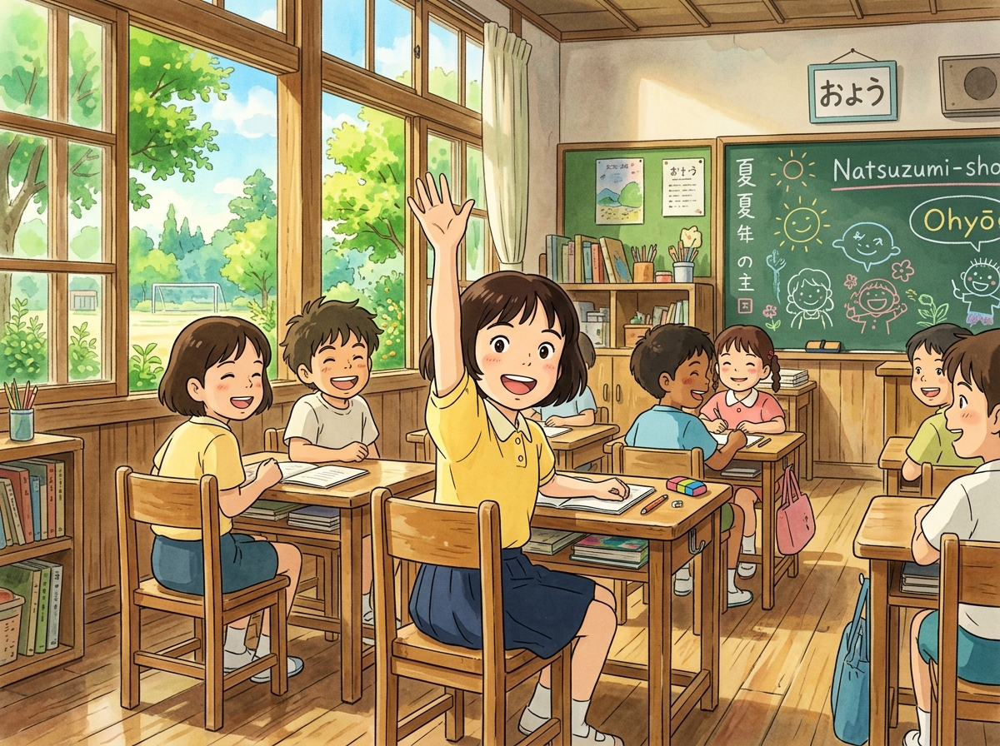
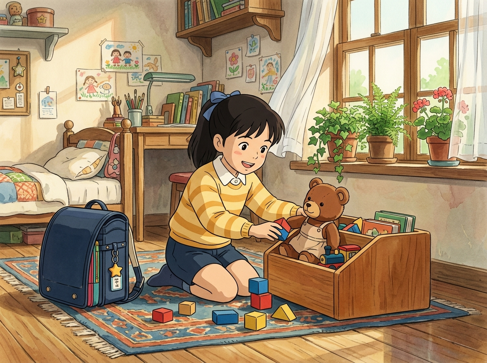
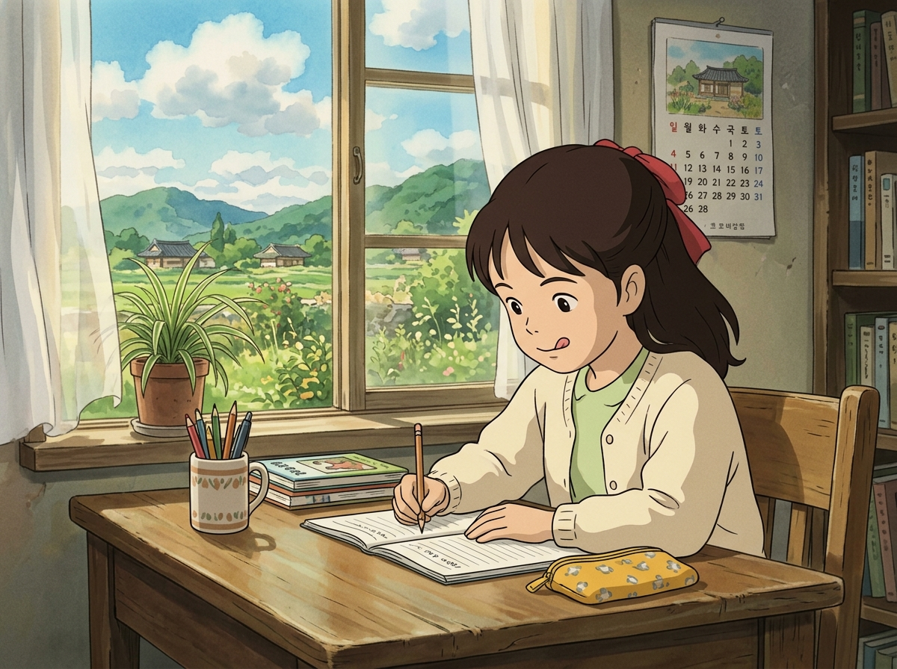
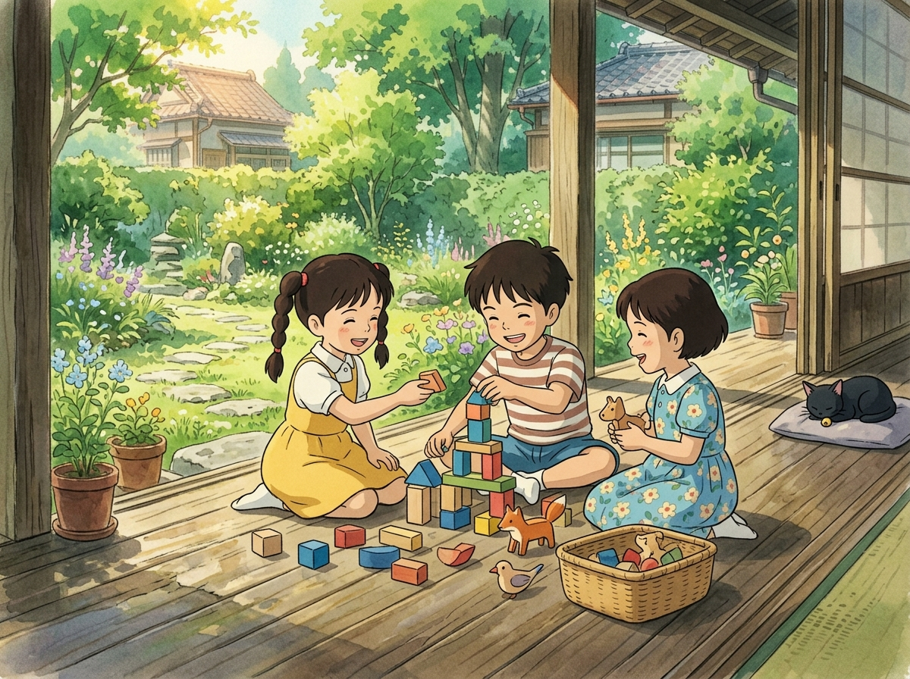

YT 심리발달 아카데미
YT 심리발달 아카데미
응용행동분석(ABA)은 자폐 스펙트럼, 발달 지연 아동의 언어 및 사회적 상호작용 개선에 국제적으로 가장 널리 입증된 과학적 치료법입니다. YT 아카데미는 아동의 행동 기능을 면밀히 분석하여 부적응 행동을 감소시키고 대체 가능한 긍정적 의사소통 기술을 지도합니다.
대상 아동: 만 2세 ~ 취학 전 영유아 및 발달지연·자폐스펙트럼 아동
진행 방식: 1:1 개별 집중 세션 및 소그룹 전환 세션
슈퍼바이저: 김태희 BCBA 행동분석가
📝 온라인 신청서 작성 (구글 폼)갑자기 규칙이 많아지고 혼자 스스로 해내야 하는 초등학교 생활! YT 아카데미의 학교준비반은 지난 5년간 수많은 아이들을 성공적으로 학교에 안착시킨 시그니처 프로그램입니다. 교실 규격의 책걸상과 모의 수업을 통해 착석 유지, 알림장 쓰기, 또래 협력, 발표력까지 완벽히 대비합니다.


모집 시기: 매년 정기 모집 (상반기/하반기 반 개설)
정원: 4~6명 내외 소그룹 (밀착 지도)
담당: 조유진 책임연구원 & 학교준비반 전문팀
조음 및 발음 부정확, 단순 언어 지연, 수용·표현 언어 불균형 아동을 대상으로 어휘력 확장, 문장 구조화, 의사소통 의도 증진을 지원합니다.
말이나 논리적 설명이 서툰 아이들이 놀이라는 자연스러운 매개체를 통해 불안, 위축, 공격성 등 내면의 갈등을 표출하고 치유하도록 돕습니다.

주의집중력 결핍, 작업기억 미숙, 학습 동기 저하 아동의 두뇌 정보 처리 능력을 개선하고 엉덩이 힘과 자기주도 공부 습관을 형성합니다.
아동의 기질적 바탕(TCI)과 인지, 언어, 사회성 발달 프로파일을 다각도로 평가하여 개별 아동에게 가장 적합한 성장 로드맵을 1:1로 설계합니다. 부모와 아이의 기질적 상호작용을 분석하여 가정 내에서 부딪히는 훈육과 갈등을 평화롭게 해결하는 기술을 코칭합니다.
1. 사전 접수 및 초기 발달 문진 상담
2. 표준화 평가 도구(TCI 기질검사, 주의집중, 언어발달) 실시
3. 임상연구팀 다학제 슈퍼비전 및 종합 프로파일링 보고서 작성
4. 1:1 심층 결과 상담 및 가정 내 실천 솔루션 제공
진행: 임상 총괄 슈퍼바이저 & 연구팀
방식: 100% 사전 예약제 운영
사회기술학습반 (사회성 그룹 치료)
"마음은 친구와 놀고 싶은데 방법을 몰라 겉도는 아이", "친구의 표정이나 눈치를 알아차리지 못해 갈등을 빚는 아이". 사회성은 억지로 주입되는 것이 아니라 안전한 또래 환경에서 성공 경험을 쌓으며 체득하는 기술입니다.

그룹 구성
인원: 연령 및 발달 수준별 2~4명 매칭
시간: 주 1~2회 (회기당 50분 치료 + 10분 부모상담)
담당: 이미지 책임연구원 & 사회성 전문팀
📝 사회성 그룹 신청 (구글 폼)